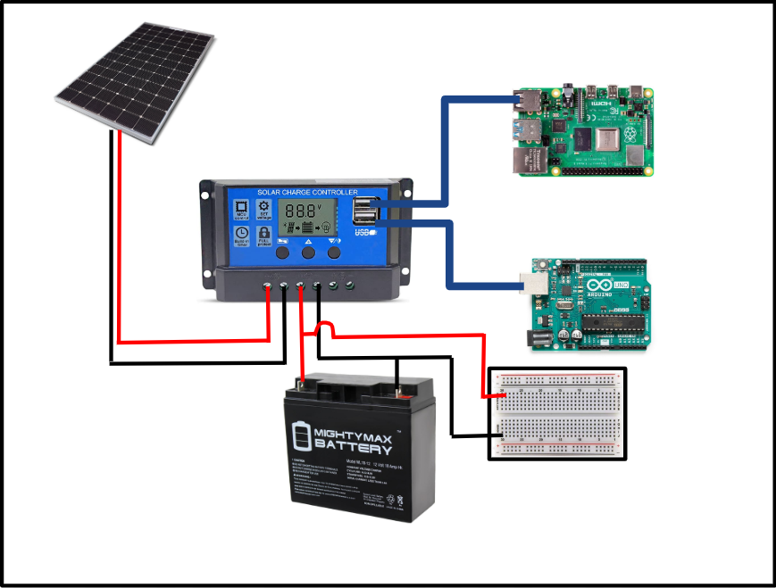
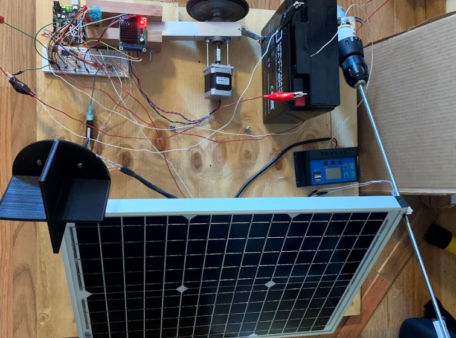
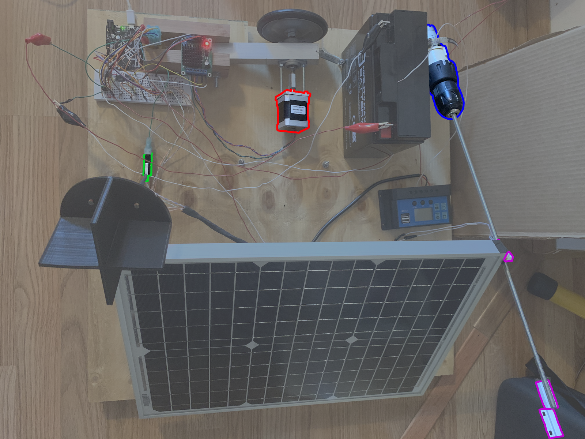
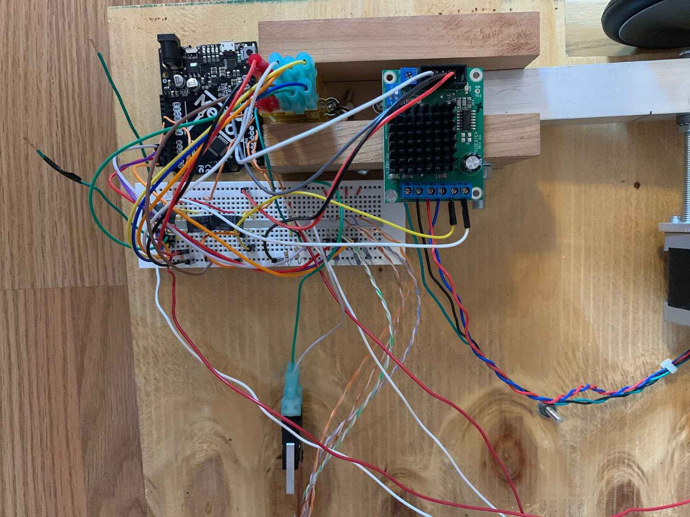

Sun Tracking Power Supply
JUN 2020 - AUG 2020
Group Members
Mentors
|
 |
|  |
The TaskCertain projects at AFLCMC require a Raspberry Pi, and groups working on those projects often remotely deploy their module to collect data. The Sun Tracker was built to support their remote deployment of a Raspberry Pi module without the need for daily human interaction. Ideally, our Sun Tracker would be entirely self-sufficient and capable of tracking and following the sun daily. To generate power, a 17W solar panel would be used in conjunction with a solar charge regulator to charge a battery and support both the Arduino module and Raspberry Pi. |
Our Approach
|
 |
|  |
The Solution |
|
|
|